pacman::p_load(ggrepel, patchwork,
ggthemes, tidyverse, hrbrthemes) Hands On Exercise 2
1.0 Set up
1.1 Checking Required Packages
1.2 Data Loading
exam_data <- read_csv("data/Exam_data.csv")Rows: 322 Columns: 7
── Column specification ────────────────────────────────────────────────────────
Delimiter: ","
chr (4): ID, CLASS, GENDER, RACE
dbl (3): ENGLISH, MATHS, SCIENCE
ℹ Use `spec()` to retrieve the full column specification for this data.
ℹ Specify the column types or set `show_col_types = FALSE` to quiet this message.2.0 Beyond ggplot2 Annotation : ggrepel
One of the challenge in plotting statistical graph is annotation, espacially with alrge number of data points
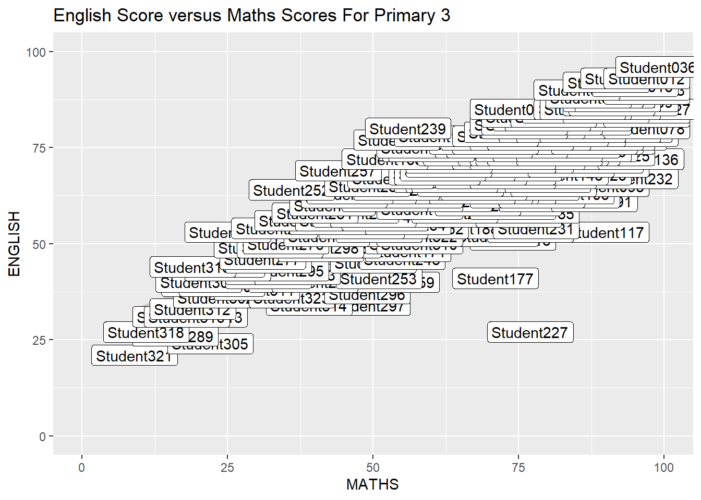
ggplot(data = exam_data,
aes(x = MATHS,
y = ENGLISH)) +
geom_point() +
geom_smooth(method=lm,
size=0.5) +
geom_label(aes(label = ID),
hjust= .5,
vjust= .5) +
coord_cartesian(xlim=c(0,100),
ylim=c(0,100)) +
ggtitle("English Score versus Maths Scores For Primary 3")ggrepel is an extentsion of ggplot2 package which rpvoide geoms for ggplot2 to repel overlapping text as in our examples of the right.
We simply replace geom_text() by geom-text_repel() and geom_label by geom_label_repel.
2.0.1 Working With Repel
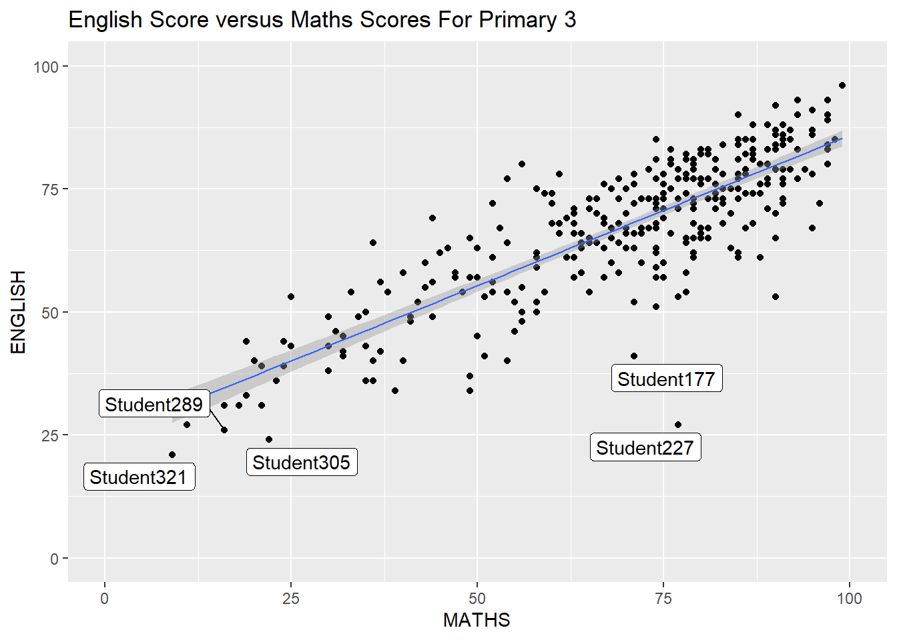
ggplot(data = exam_data,
aes(x = MATHS,
y = ENGLISH)) +
geom_point() +
geom_smooth(method=lm,
size=0.5) +
geom_label_repel(aes(label = ID),
hjust= .5,
vjust= .5) +
coord_cartesian(xlim=c(0,100),
ylim=c(0,100)) +
ggtitle("English Score versus Maths Scores For Primary 3")2.1 Beyond ggplot2 themes
ggplot2 comes with eight built-in themes, they are: theme_grey(), theme_bw(), theme_classic(), theme_dark(), theme_light(), theme_linedraw(), theme_minimal() and theem_void()
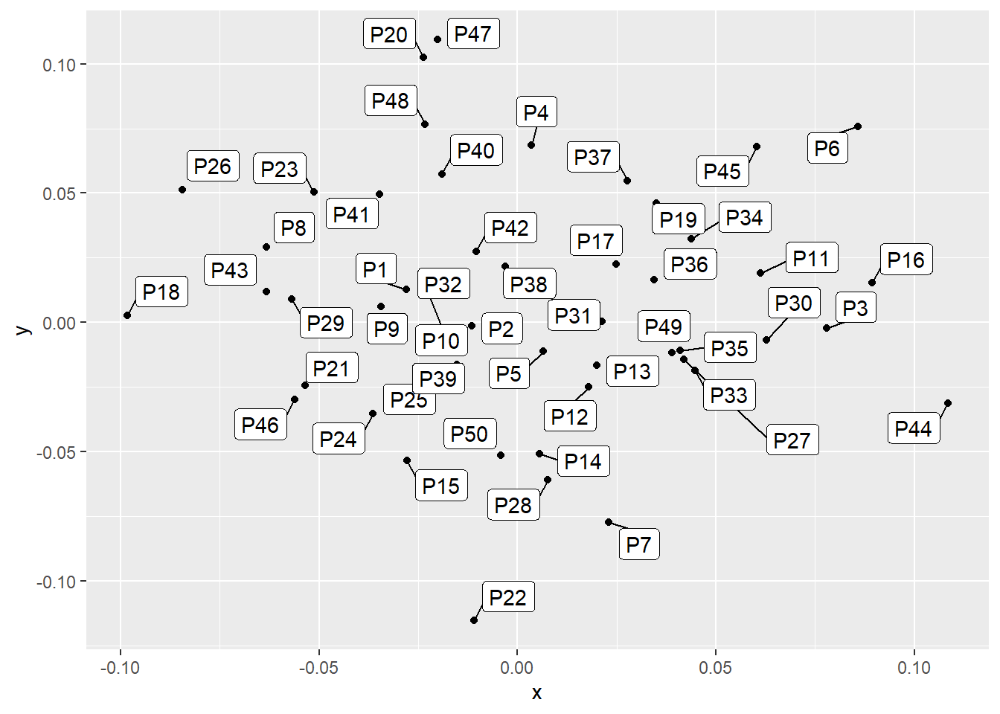
ggplot(data = exam_data,
aes(x = MATHS)) +
geom_histogram(bins = 20,
boundary = 100,
color = 'grey25',
fill = 'grey90') +
theme_gray() +
ggtitle("Distributon of Math Scores")Refer to this link to learn more about ggplot2 Themes.
2.1.1 Working With ggtheme Package
ggthemes provides ‘ggplot2’ themes that replicate the look of plots by Edwards Tufte, Stephen Few, FiveTthirthyeight, The Economist, ‘Stata’, ‘Excel’ and The Wall Street Journal, among the others.
In the example below, The Economist Theme is Used/
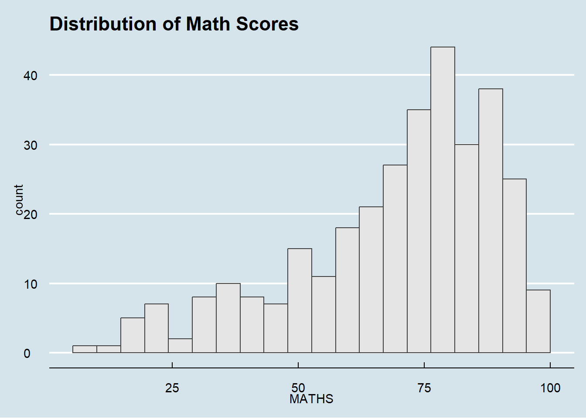
ggplot(data = exam_data,
aes(x = MATHS)) +
geom_histogram(bins=20,
boundary = 100,
color = 'grey25',
fill = 'grey90') +
ggtitle('Distribution of Math Scores') +
theme_economist()It also provide some extra geoms and scales for ‘gglot2’.
2.1.2 Working with hrbrtheems Package
hrbrthemes package provides a base theme that focus on typographic elements, including where various labels are placed as well as the fonts that are used.
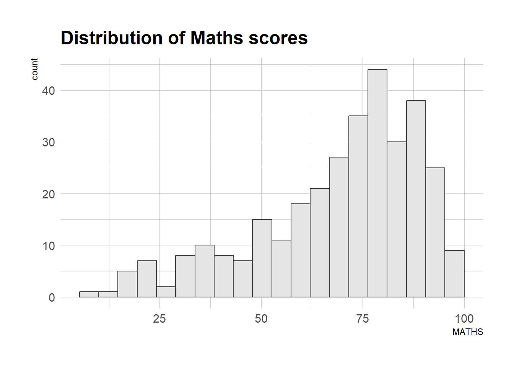
ggplot(data=exam_data,
aes(x = MATHS)) +
geom_histogram(bins=20,
boundary = 100,
color="grey25",
fill="grey90") +
ggtitle("Distribution of Maths scores") +
theme_ipsum()The second goal centers around productivity for a production workflow. In face, this ‘production workflow’ is the context for where the elements of hrbrthemes could be used.
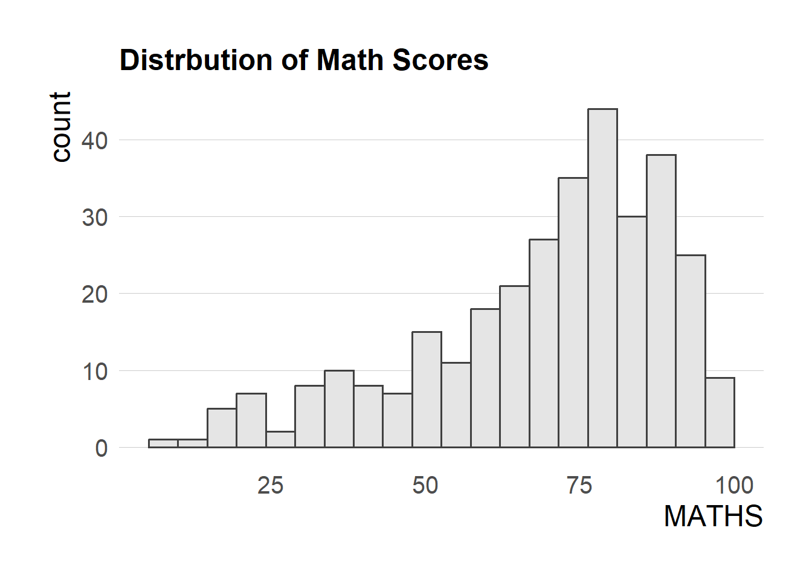
ggplot(data = exam_data,
aes(x = MATHS)) +
geom_histogram(bins = 20,
boundary = 100,
color = 'grey25',
fill = 'grey90') +
ggtitle('Distrbution of Math Scores') +
theme_ipsum(axis_title_size = 18,
base_size = 15,
grid = 'Y')2.2 Beyond Single Graph
It is not unusual that multiple graphs are required to tell a compelling visual story. There are several ggplot2 extensions provide functions to compose figure with multiple graph. In this section we will learn how to create composite plot by combining multiple graphs. First, let us create three statistical graphics by using the code chunk below
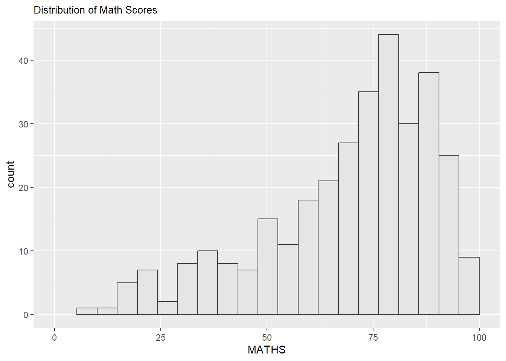
p1 <- ggplot(data = exam_data,
aes(x = MATHS)) +
geom_histogram(bins = 20,
boundary = 100,
color = 'grey25',
fill = 'grey90') +
coord_cartesian(xlim = c(0,100)) +
ggtitle('Distribution of Math Scores')+
theme(plot.title = element_text(size = 10))
p1Next
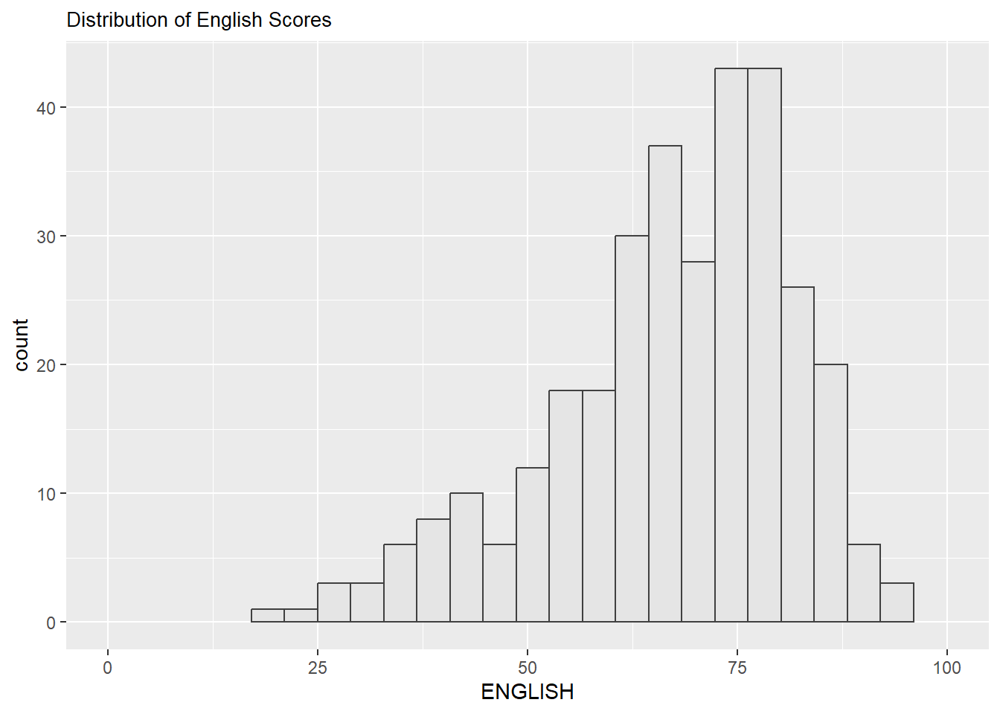
p2 <- ggplot(data = exam_data,
aes(x = ENGLISH)) +
geom_histogram(bins = 20,
boundary = 100,
color = 'grey25',
fill = 'grey90') +
coord_cartesian(xlim = c(0,100)) +
ggtitle('Distribution of English Scores')+
theme(plot.title = element_text(size = 10))
p2Lastly, draw a Scatter Plot for English vs Math Score as shown below
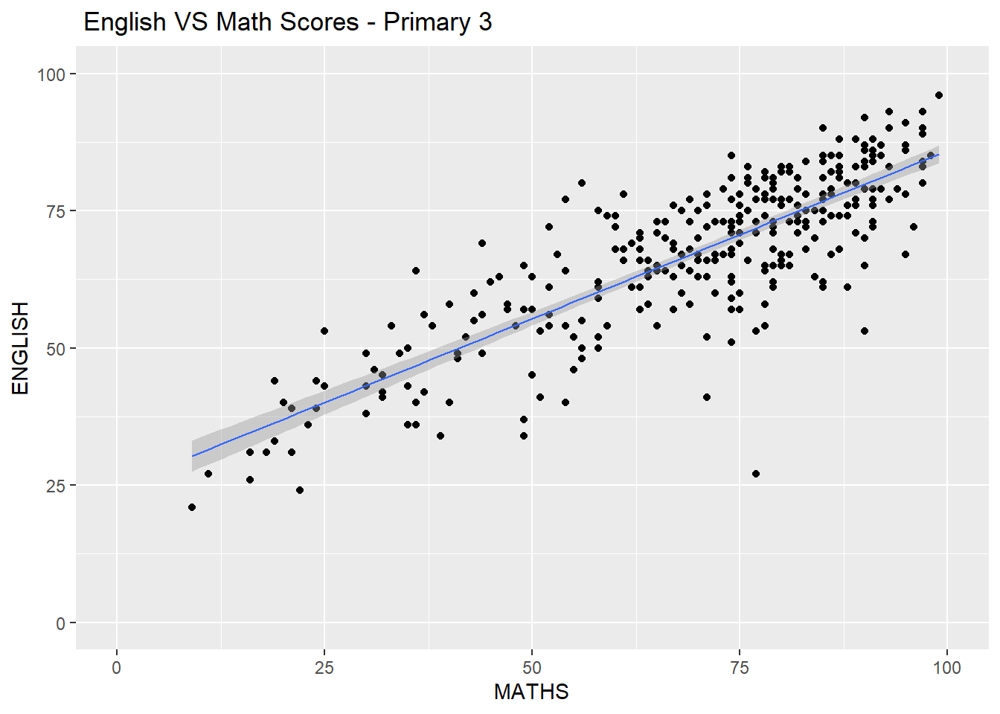
p3 <- ggplot(data = exam_data,
aes(x = MATHS,
y = ENGLISH)) +
geom_point() +
geom_smooth(method = lm,
size = 0.5) +
coord_cartesian(xlim = c(0,100),
ylim = c(0,100)) +
ggtitle('English VS Math Scores For Primary 3')+
theme(plot.title = element_text(size = 10))
p32.2.1 Creating Composite Graphics: Pathwork Method
There are several ggplot2 extension’s functions support the needs to prepare composite figure by combining several graphs such as grid_arrange() of gridExtra package and plot_grid() of cowplot package. In this section we are going to shared about ggplot2 extension call patchwork which is specially designed for combining separate ggplot2 graphs into a single figure.
Patchwork packages has very simple syntax where we can create layouts super easily. Here are the general syntax that combines:
· Two-Column Layout using Plus Sign +
· Parenthesis() to create a subplot group.
· Two-Row Layout using the Division Sing /
2.2.2 Combining Two ggplot2 graphs
Figure in the tabset below wos a compsite of two histogram created using patchwork.
Note how simple the syntax used to create the plot!
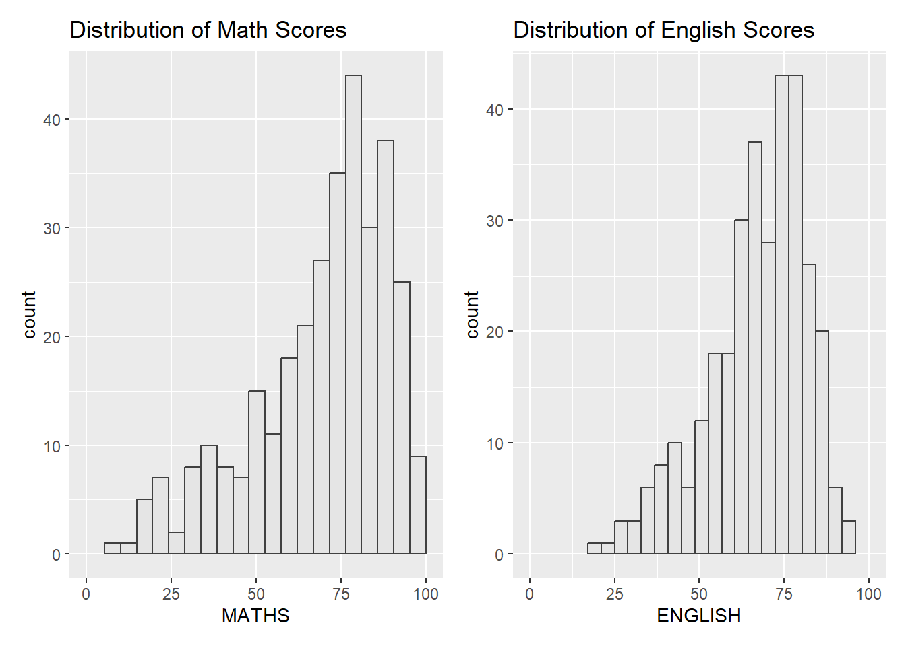
p1 + p22.2.3 Combining Three ggplot2 graphs
We can plot more complex composite by using appropriate operators. For example, the composite figure below is plotted by using:
· / operator to stack two ggplot2 graphs
· | operator to place the plots beside each other
· () operator to define the sequence of the plotting
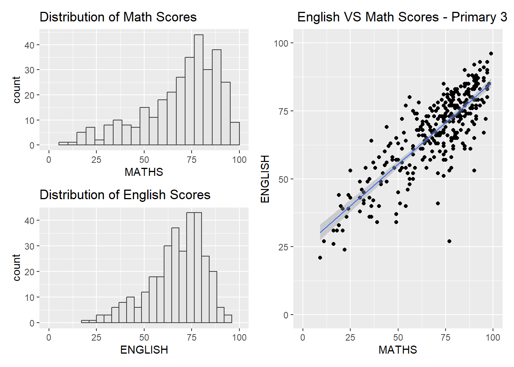
(p1 / p2) | p32.2.4 Creating a composite Figure with tag
In order to identify subplot in text, patchwork also provides auto-tagging capabilities as shown in the figure below.
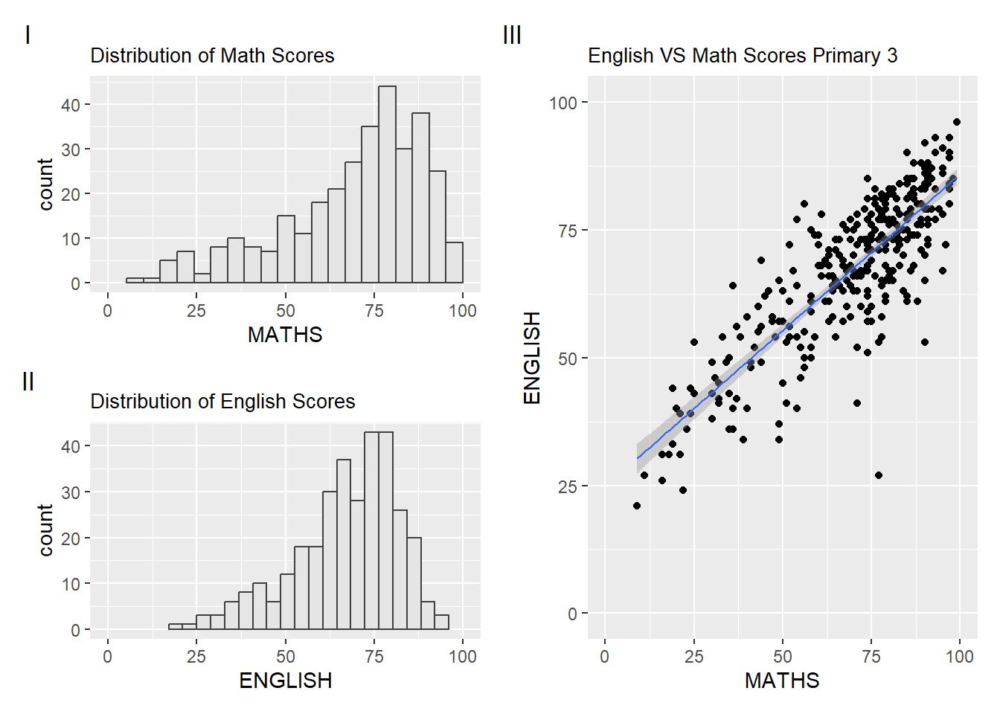
((p1 / p2) | p3) +
plot_annotation(tag_levels = 'I')2.2.5 Creating Figure with insert
Beside providing functions to place plots next to each other based on the provided layouts.
With inset_element() of patchwork, we can place on or several plots or graphic elements freely on top or bloe another plot.
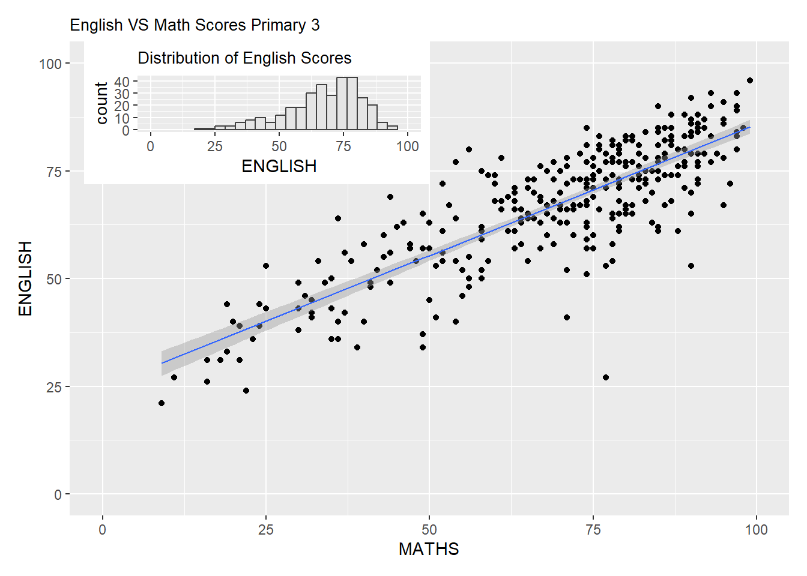
p3 + inset_element(p2,
left = 0.02,
bottom = 0.7,
right = 0.5,
top = 1)2.2.6 Creating a composite figure by using patchwork & ggtheme
Figure below is created by combining patchwork and theme_economist() of ggthemes package discussed earlier.
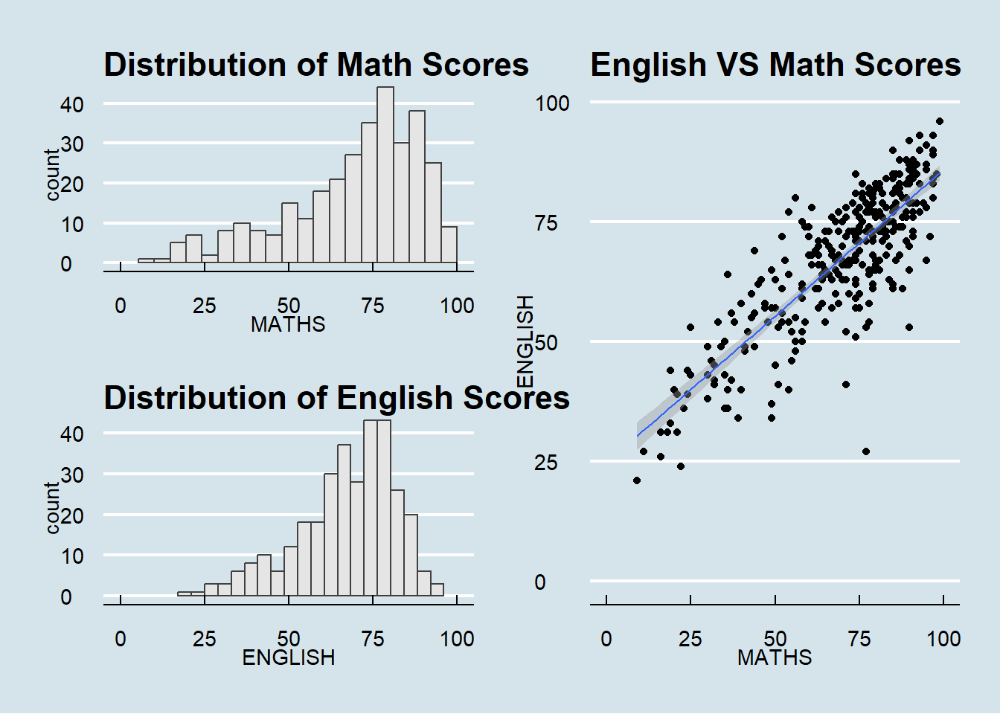
patchwork <- (p1 / p2) | p3
patchwork & theme_economist(base_size = 7) +
theme(plot.title = element_text(size = 7))2.3 Reference
· Patchwork Rpackage goes nerd viral
· ggrepel
· ggthemes
· hrbrthemes
· ggplot tips: Arranging Plots
· ggplot2 Theme Elements Demonstration
· ggplot2 Theme Elements Reference Sheet